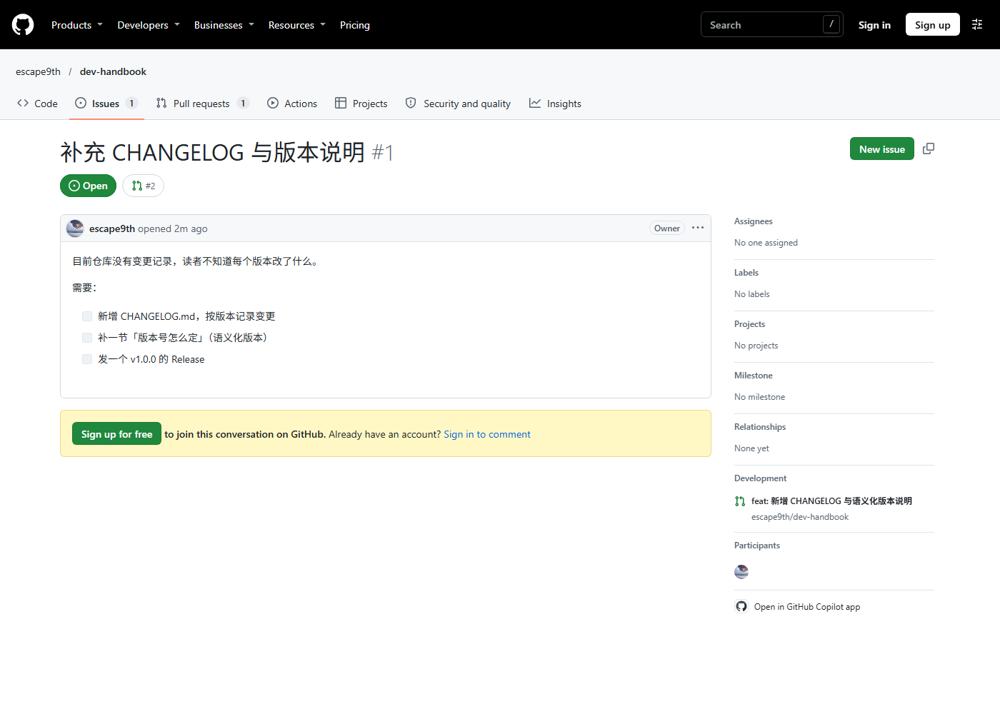
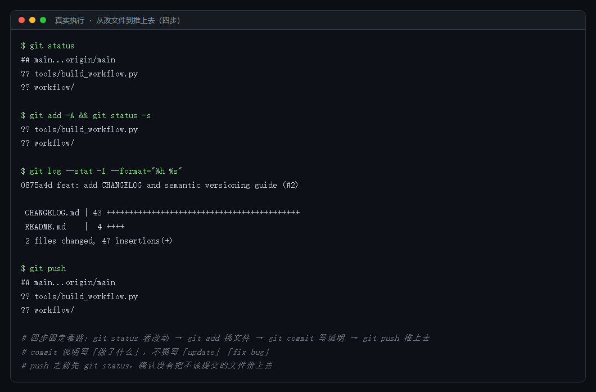
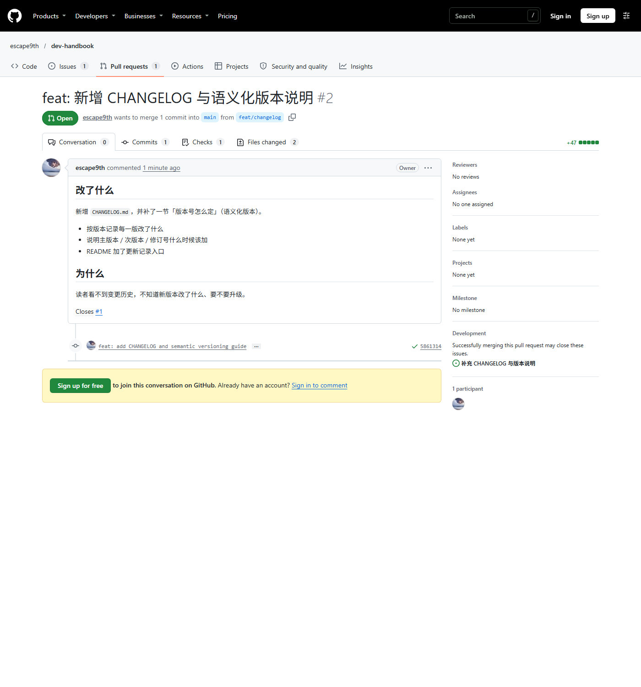
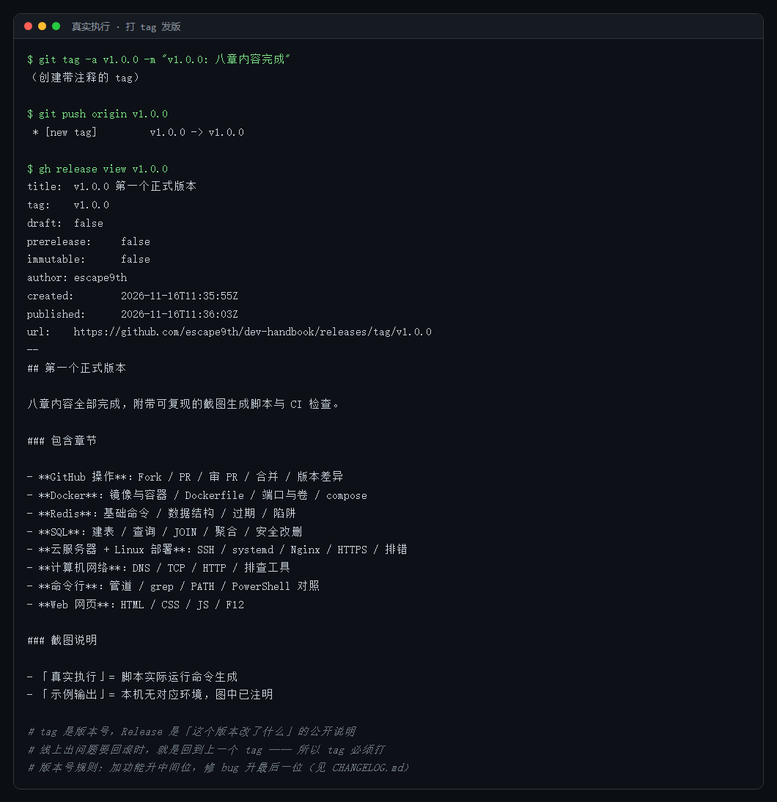
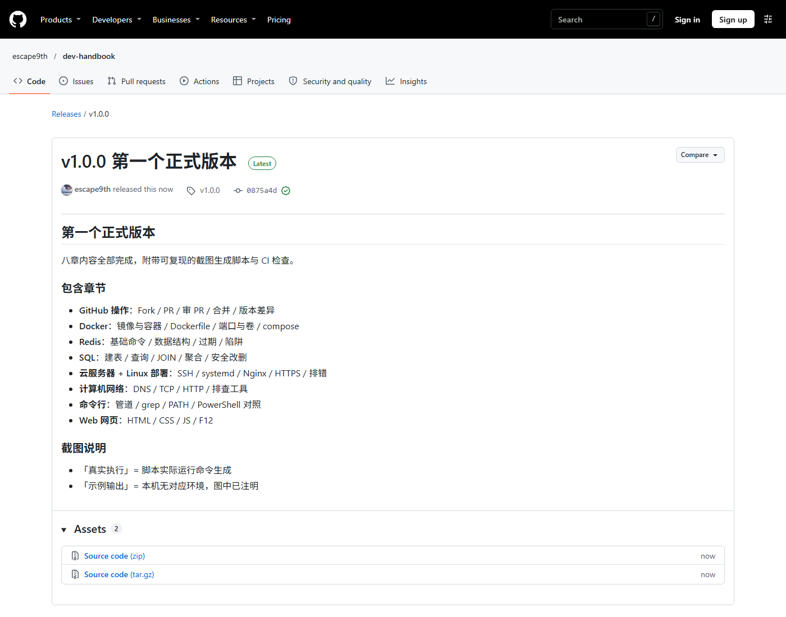
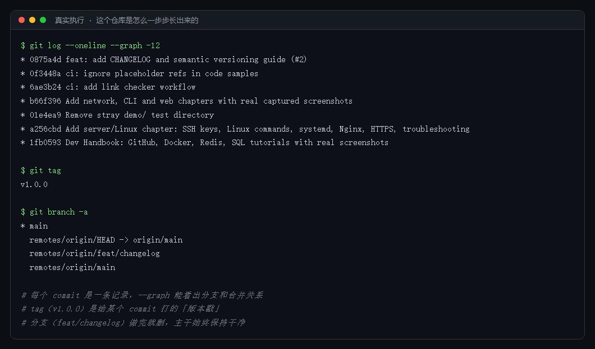
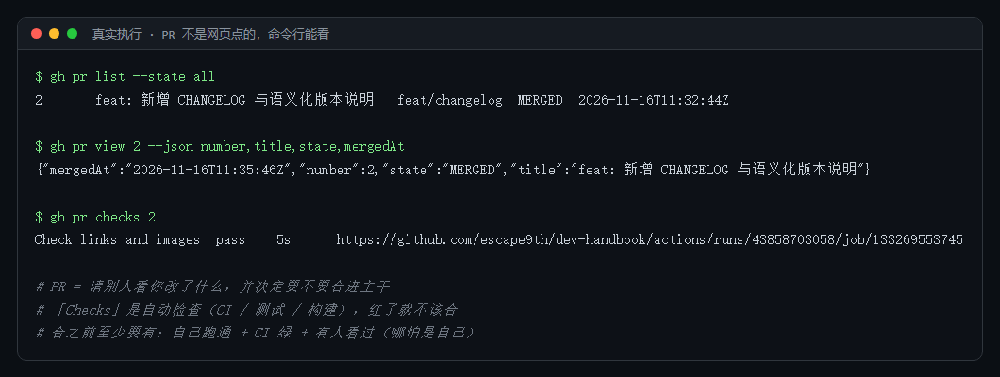
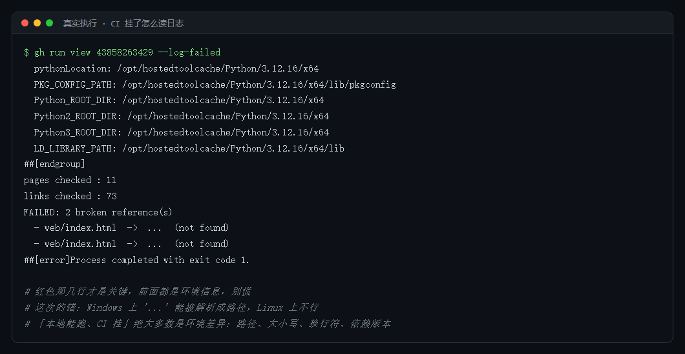
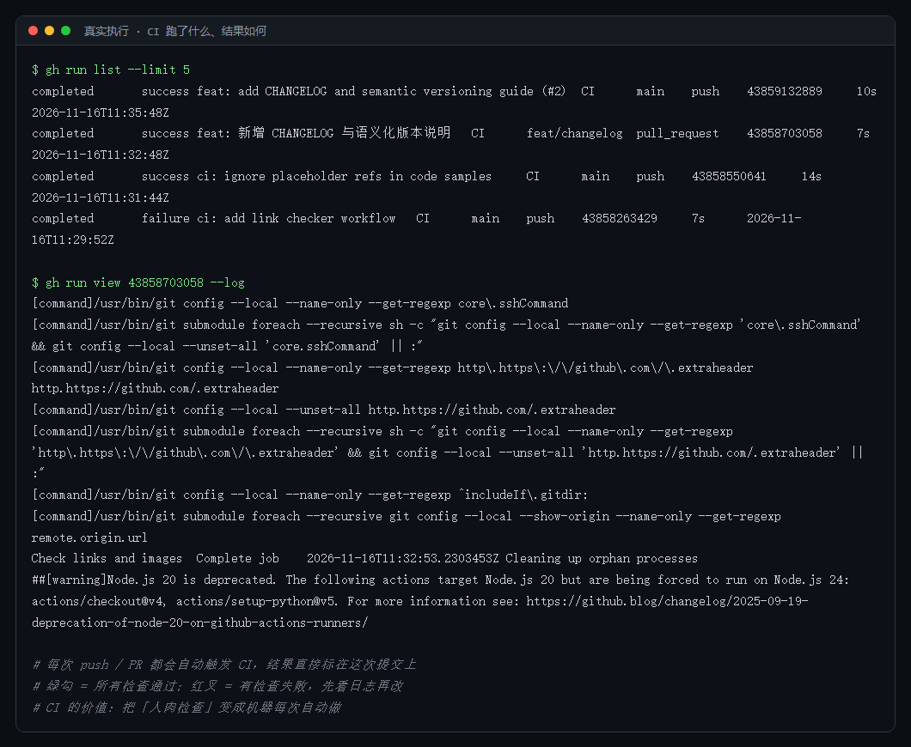
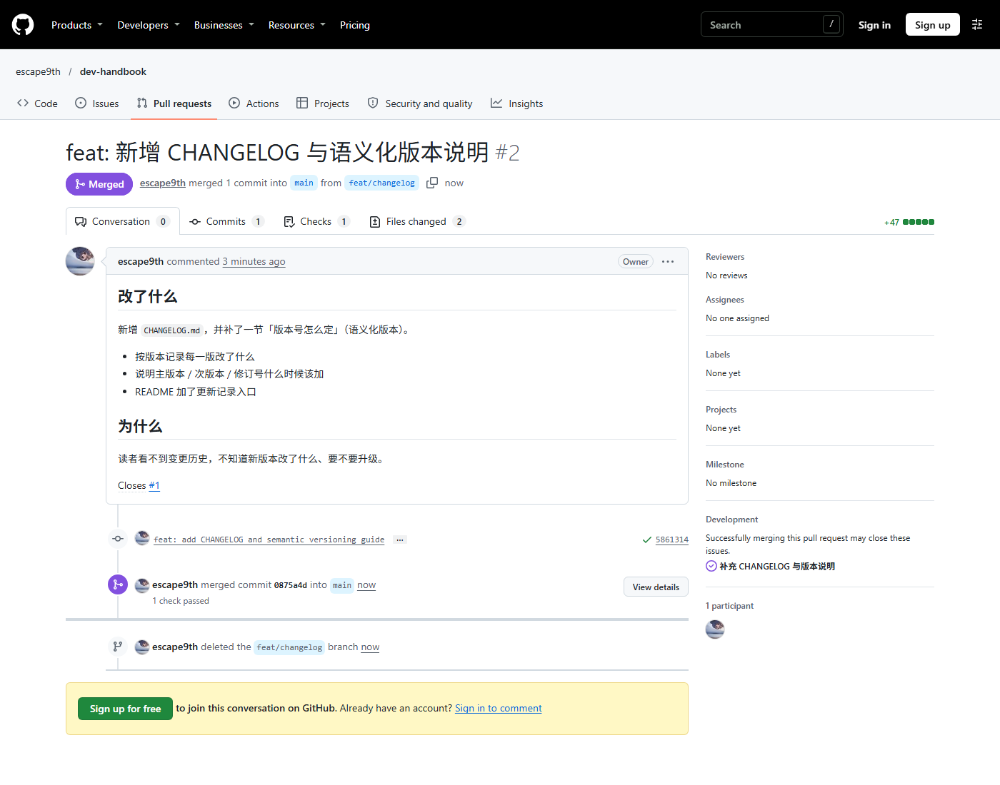

从开发到上线
给没实习过的学生：真实项目里，写代码大概只占 30%的时间
0 三个最大的误解
真实情况：编码只占 30–40%。剩下是需求对齐、测试、上线、监控、修 bug、还技术债。
面试会问的：「你这个功能上线后出过什么问题？怎么发现和处理的？」
真实情况：有发布窗口（不能随便发）、灰度（先放 1% 流量）、回滚预案（出问题 5 分钟内退回去）、值班（半夜也可能被叫）。
面试会问的：「上线失败怎么办？」不会回滚方案的人，基本会被扣分。
真实情况：靠三道闸——Code Review（人看）、CI（机器测）、测试（用例覆盖）。
你的代码不是写给自己看的，是写给三个月后要改它的人看的。
1 六个阶段，一个循环
① 需求 ──→ ② 设计 ──→ ③ 开发 ──→ ④ 测试 ──→ ⑤ 上线
↑ │
└──────────────── ⑥ 运维 / 迭代 ←───────────────────┘| 阶段 | 谁参与 | 产出物 | 最容易翻车的地方 |
|---|---|---|---|
| ① 需求 | 产品 + 开发 + 测试 | PRD / Issue | 需求没写清就开工 |
| ② 设计 | 开发（+ 资深评审） | 技术方案 / 接口 / 表结构 | 跳过评审直接写 |
| ③ 开发 | 开发 | 代码 + PR | 不写测试，不写清楚的提交说明 |
| ④ 测试 | 测试 + 开发 | 测试用例 / Bug 单 | 提测质量差，来回打回 |
| ⑤ 上线 | 运维 + 开发 | 发布记录 / 回滚预案 | 没有回滚方案 |
| ⑥ 运维 | 全员 | 监控 / 告警 / 复盘报告 | 只做功能，不做监控 |
真实团队至少有 4–5 套环境
| 环境 | 干什么用 | 谁能碰 |
|---|---|---|
| 本地 local | 自己写自己跑，随便改 | 你 |
| 开发 dev | 合并后自动部署，先看能不能跑 | 开发 |
| 测试 test / staging | 给 QA 点，造真实数据测 | 测试 |
| 预发 pre | 和生产一模一样，上线前最后验一遍 | 核心成员 |
| 生产 prod | 真正的用户在用 | 发布权限 |
铁律：动手前先确认自己在哪套环境。看配置、看域名、看数据库名。
2 需求：Issue 不是随便写的
一个能干活的需求，必须回答：谁、什么场景、做到什么算完成。

| 要素 | 反例 ❌ | 正例 ✅ |
|---|---|---|
| 背景 | "加个导出功能" | "运营每月要手工整理订单，耗时 2 天" |
| 范围 | "导全部" | "导出近 3 个月的订单，只能导自己的" |
| 验收 | （没有） | "点导出 30 秒内出 Excel，带 6 个字段" |
3 设计：写代码之前想清楚
不用写很长的文档，但要能说清四件事。
| 要写清 | 例子 |
|---|---|
| 数据怎么存 | 新增 orders 表，字段：id / user_id / amount / status / created_at |
| 接口长什么样 | GET /api/orders/export?from=...&to=... 返回文件流 |
| 边界情况 | 没有数据怎么办？超过 1 万条怎么办？并发导出呢？ |
| 怎么验证 | 本地造 1 万条数据，测导出耗时 |
4 开发：分支、提交、PR、Review
标准四步（真实命令）

分支策略
main ← 永远能上线，不能直接改
└─ feat/xxx ← 加功能
└─ fix/xxx ← 修 bug
└─ hotfix/xxx ← 线上紧急修复从 main 拉分支：git checkout -b feat/export-orders
小步提交，一个提交只做一件事
推上去开 PR，写完自测一遍再叫别人看
通过后 squash 合并，删分支
提交说明怎么写
| ❌ 别这么写 | ✅ 这么写 |
|---|---|
update / fix / 改了点东西 | feat: 订单支持按时间范围导出 |
aaaa / 1 | fix: 导出 0 条数据时报错 500 |
feat: 新功能
fix: 修 bug
docs: 只改文档
refactor: 重构（行为不变）
test: 加测试
chore: 杂事（依赖、配置）PR 页面上该看什么

| 区域 | 含义 |
|---|---|
| Conversation | 讨论区：说明改了什么、为什么改 |
| Commits | 这个 PR 包含几个提交 |
| Checks | CI 结果：绿勾才能合，红叉先修 |
| Files changed | 逐行 diff —— Review 就看这里 |
Code Review 到底看什么
| 要看 | 例子 |
|---|---|
| 逻辑对不对 | 边界条件、空值、并发 |
| 有没有安全隐患 | SQL 拼接、权限校验、日志打密码 |
| 能不能读懂 | 命名、注释、拆得太碎或太糗 |
| 有没有测试 | 新逻辑至少一条用例 |
| 影响面 | 改了公共方法，别的地方会不会挂 |
5 测试：提测不是"丢过去"
提测 = 我这边确认没问题了，请帮我验证。不是"你帮我找 bug"。
| 层级 | 谁写 | 测什么 | 快慢 |
|---|---|---|---|
| 单元测试 | 开发 | 一个函数/方法对不对 | 毫秒级 |
| 接口测试 | 开发/测试 | 请求返回对不对 | 秒级 |
| 集成/联调 | 前后端一起 | 两个服务接起来通不通 | 分钟级 |
| 回归测试 | 测试 | 改了 A 有没有弄坏 B | 小时级 |
| 冒烟测试 | 发布后 | 核心功能还能不能用 | 5 分钟 |
Bug 的生命周期
测试发现 → 提 Bug 单（复现步骤/期望/实际/环境）
↓
开发确认（是不是 Bug / 谁的模块）
↓
修复 → 自测 → 标「已修复」
↓
测试回归验证 → 通过关单 / 不通过打回正确写法：「在测试环境，用 A 账号、无订单，点导出，报 500，日志是 xxx」。
6 上线：这是个仪式
上线不是"点按钮"，是一套降低风险的流程。
上线前检查清单
| 项 | 为什么 |
|---|---|
| ☐ CI 全绿 | 自动检查都过了 |
| ☐ 在预发环境验过 | 和生产一样的环境 |
| ☐ 回滚方案准备好了 | 出问题能 5 分钟内退回去 |
| ☐ 数据库变更可逆 | 加字段可以，删字段先别删 |
| ☐ 有人值班 | 出问题有人接 |
| ☐ 在低峰期发 | 别在流量高峰动手 |
发布策略
| 方式 | 怎么做 | 适合 |
|---|---|---|
| 全量发布 | 直接换掉 | 小项目、内部系统 |
| 灰度 | 先 1% → 10% → 100% | 用户量大的功能 |
| 蓝绿 | 新旧两套并存，切流量 | 要求零停机 |
| 功能开关 | 代码先上线，开关控制是否生效 | 想随时关掉的功能 |
这不是段子，是无数事故换来的。
发版：tag 和 Release


7 维护：上线才是开始
线上跑起来之后，才是真正的长期工作。
监控与告警
| 看什么 | 指标 | 告警阈值举例 |
|---|---|---|
| 服务活着吗 | 健康检查 / 端口 | 连续 2 次失败 |
| 错误多不多 | 错误率、5xx 数 | 5 分钟错误率 > 1% |
| 快不快 | 响应时间 P95 / P99 | P99 > 2s |
| 机器扛得住吗 | CPU / 内存 / 磁盘 | 磁盘 > 85% |
| 业务正常吗 | 订单量、注册数 | 同比掉 50% |
事故分级与处理
| 级别 | 什么情况 | 响应 |
|---|---|---|
| P0 | 全站不可用 / 数据丢失 | 立刻全员响应，先止损 |
| P1 | 核心功能不可用 | 30 分钟内响应 |
| P2 | 部分功能异常 / 影响小 | 当天处理 |
| P3 | 体验问题 / 文案错误 | 排期处理 |
先止损，再查原因。回滚 / 切流量 / 关开关，别一边排查一边让用户在报错
定位：看监控、看日志、看最近改动（八成是刚发的版本）
修复并验证
复盘（Postmortem）：写清时间线、根因、改进项，对人不对责
迭代：技术债要还
| 现象 | 后果 |
|---|---|
| 一个文件 3000 行 | 没人敢改，改一次崩一次 |
| 没有测试 | 每次上线都提心吊胆 |
| 复制粘贴三份 | 改一处漏两处 |
| 依赖几年没升级 | 有漏洞，升不动 |
文档：写给人看的
至少要有三样：README（怎么跑起来）、CHANGELOG（每版改了什么）、部署文档（怎么上线/回滚）。
8 真实案例：这个仓库自己走了一遍
下面不是编的场景，是 escape9th/dev-handbook 里真实发生的事。
① 仓库是这么长出来的（真实提交历史）

② 提需求 → 开 Issue
发现"缺 CHANGELOG"，于是开了一个 Issue #1，写清三个验收项。
③ 拉分支、写代码、提 PR

④ CI 挂了 —— 这是最有价值的一段
加了 CI 之后第一次跑，红了。日志说 web/index.html 有两个链接找不到。

src="..."，被检查脚本当成了真链接。更关键的是——本地 Windows 上
... 能解析成一个路径，所以本地是过的；Linux 上不存在，所以 CI 挂。这就是「本地能跑、CI 挂」的典型：路径、大小写、换行符、依赖版本。
⑤ 修好、CI 变绿

⑥ 合并、打 tag、发 Release

9 学生最该补的认知
从「交作业」到「做产品」的五个转变
| 作业思维 | 工程思维 |
|---|---|
| 能跑就行 | 能跑 + 能改 + 能排查 |
| 写完就交 | 自测 → 提测 → 上线 → 监控 |
| 报错就贴截图 | 看日志、看监控、给复现步骤 |
| 代码只有我看 | 别人要读，Review 要过 |
| 改坏了重写 | 线上不能重写，只能回滚 |
面试里最容易被问穿的三题
没真上线过，就说清楚：本地跑通 / 有 CI / 部署过到服务器。别吹生产环境。
答法：「现象 → 我以为是 A → 排查发现是 B → 怎么验证 → 怎么修的 → 后来怎么避免的」。过程比结论值钱。
能说出：拉分支、提交规范、PR、Code Review、解决冲突、tag 发版 —— 就比 90% 的学生强。
没实习怎么补这段经历
把自己项目真的部署上线（几十块一年的服务器就够），拿到公网地址
给项目加 CI（就像这个仓库），让每次提交自动检查
写 CHANGELOG 和版本号，让别人看到你怎么迭代
去开源项目提 PR，体验真实 Review 和被打回
故意制造一次事故（测试环境），然后练回滚和复盘